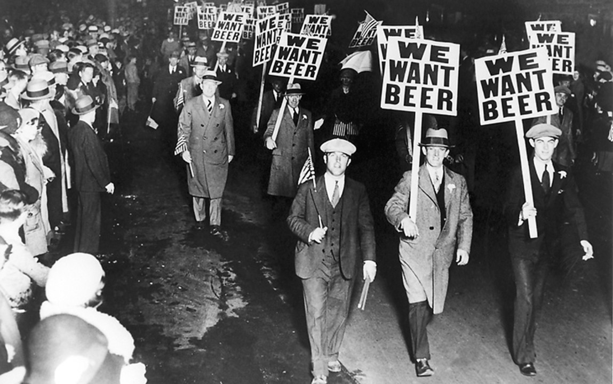
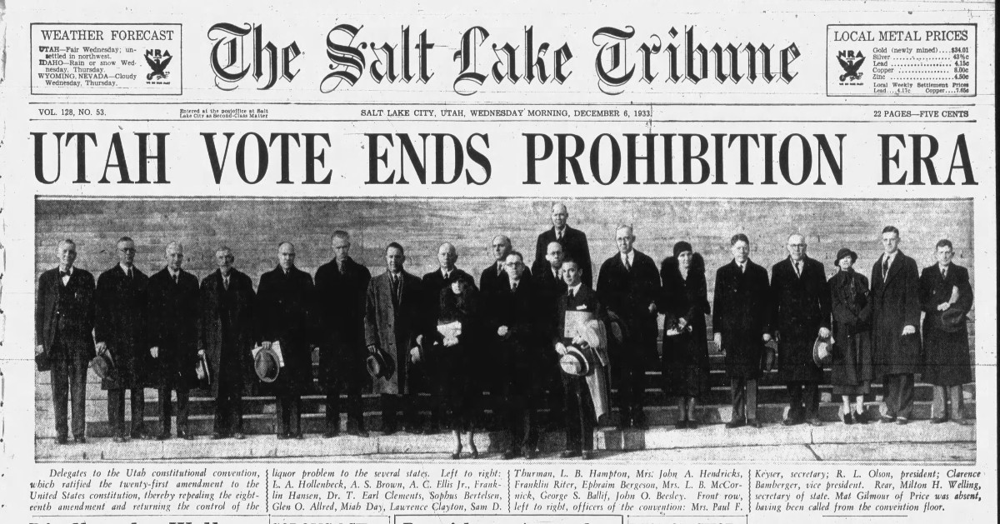

At the turn of the twentieth century, a powerful temperance movement convinced Congress that alcohol was the root cause of most of America's problems — crime, poverty, broken families, you name it. On January 16th, 1919, Congress passed the Eighteenth Amendment and banned it outright. The thinking went that without booze, Americans would be healthier, more productive, and morally improved. It did not go as planned.

Americans march in protest during Prohibition — a movement that ultimately proved impossible to sustain.
Prohibition made things considerably worse. Organized crime stepped in to fill the void left by legitimate bars and distilleries. Bootleg liquor flooded the country. Speakeasies outnumbered the saloons they replaced. Respect for the law eroded. The federal government had effectively handed a thriving industry to gangsters, and everyone knew it.
By the late 1920s, even many of Prohibition's original supporters had turned. Repeal organizations multiplied. In 1932, Franklin Delano Roosevelt ran for President on a platform that included ending Prohibition — and won in a landslide.

The Salt Lake Tribune, December 6, 1933 — the morning after Utah cast the deciding vote.
On December 5th, 1933, Utah became the final state needed to ratify the 21st Amendment, and just like that, Prohibition was over. America got its bars back. By 1966, not a single state had laws banning alcohol. December 5th was a very good day.